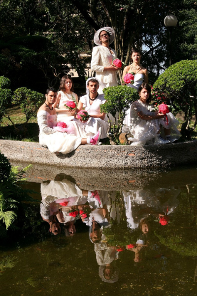

Couve-Flor
2005–2012
O Couve-Flor era um coletivo de artistas independentes que trabalhavam com teatro, dança contemporânea, artes visuais e vídeo. A característica do coletivo era ser um coletivo em conexão. A gente buscava conexão dentro de Curitiba, com outras áreas da arte. E entre nós mesmos, porque éramos artistas com trabalhos muito diferentes uns dos outros: fazíamos ações em conjunto, mas cada um tinha uma história estética completamente distinta. E também conexão com outras cidades e outros países. Durou sete anos e se desfez no fim de 2012.
Fizeram parte do Couve-Flor
Cândida Monte, Cristiane Bouger, Elisabete Finger, Gustavo Bitencourt, Michelle Moura, Neto Machado, Stéphany Mattanó e Princesa Ricardo Marinelli.

Intervenção urbana de estreia, 2005. Fotografia: Alessandra Haro.
18